Ben sana mecburum bilemezsin
Adını mıh gibi aklımda tutuyorum
Büyüdükçe büyüyor gözlerin
Ben sana mecburum bilemezsin
İçimi seninle ısıtıyorum.
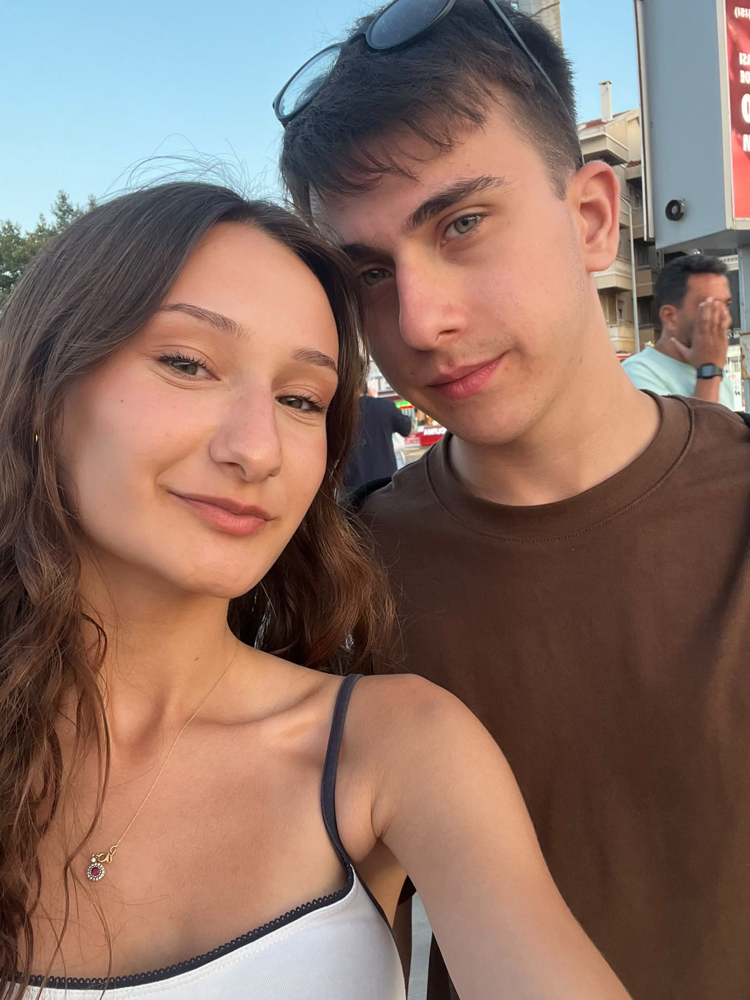
0gün
Gülünü senin için bu kadar önemli kılan, onun için harcadığın zamandır.
Seni düşünmek güzel şey, ümitli şey,
dünyanın en güzel sesinden
en güzel şarkıyı dinlemek gibi bir şey…
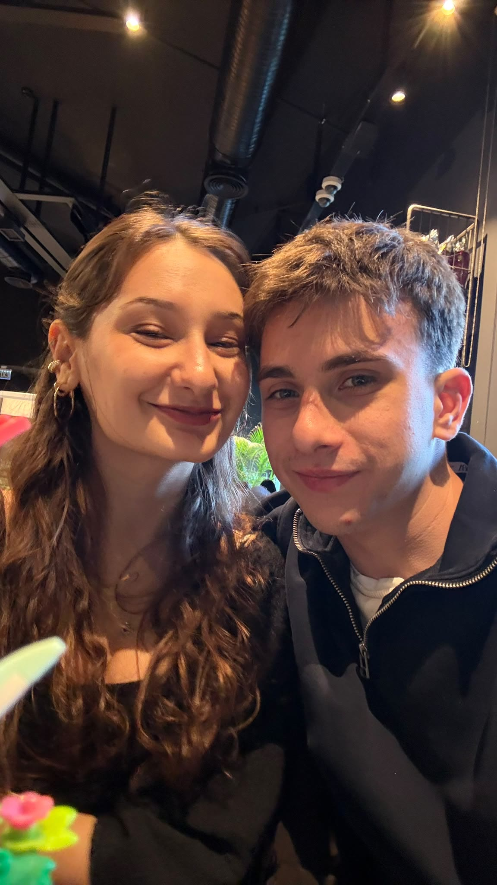
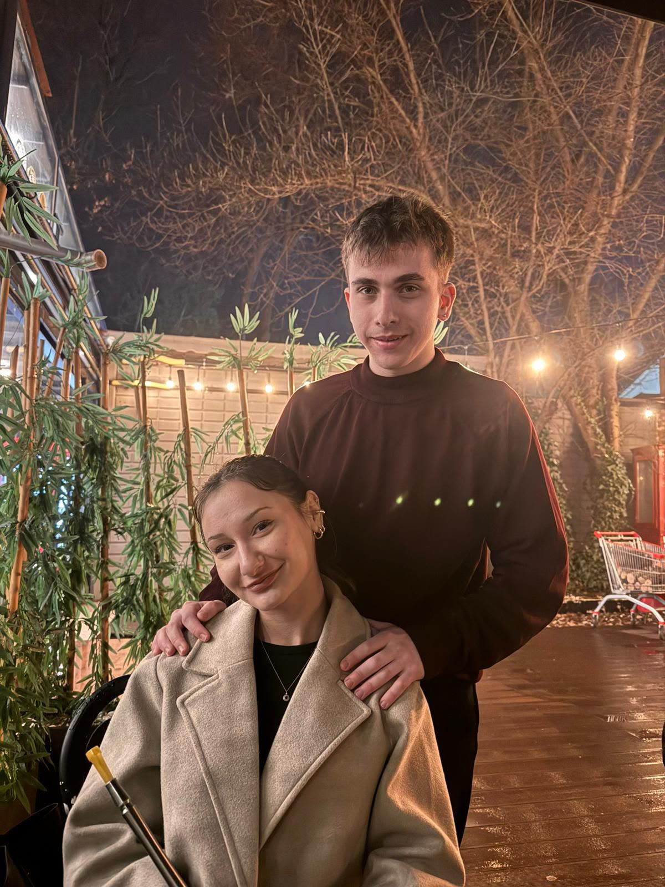
Seni seviyorum; nasıl, ne zaman, nereden bilmeden.
Seni dolambaçsız seviyorum, gurursuz:
böyle seviyorum, çünkü başka türlü sevmeyi bilmiyorum.
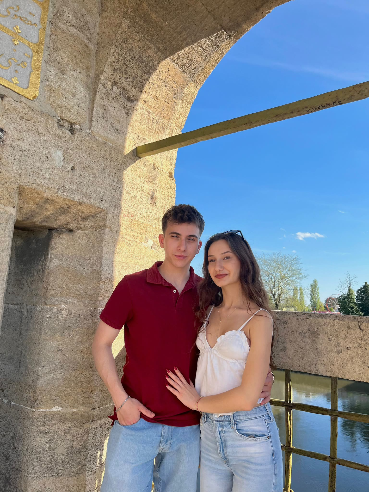
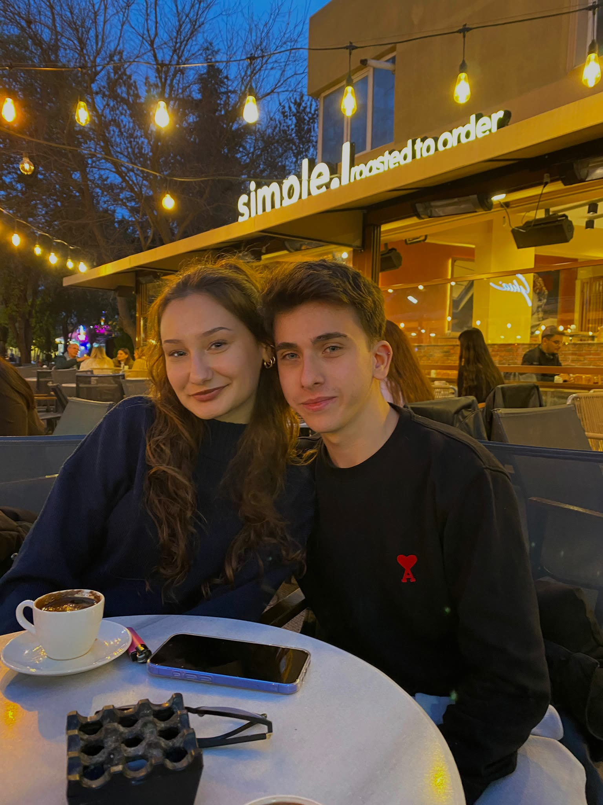
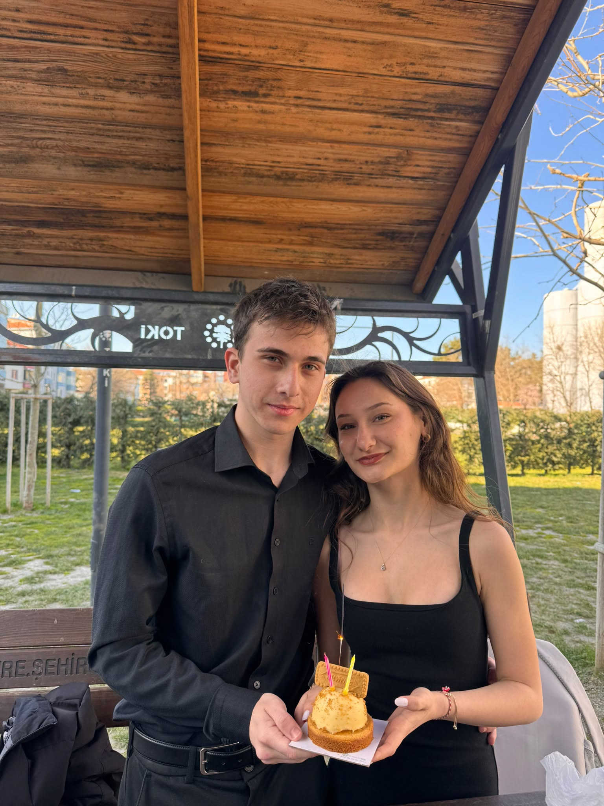
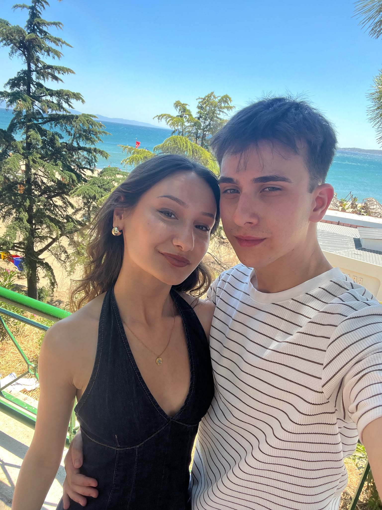
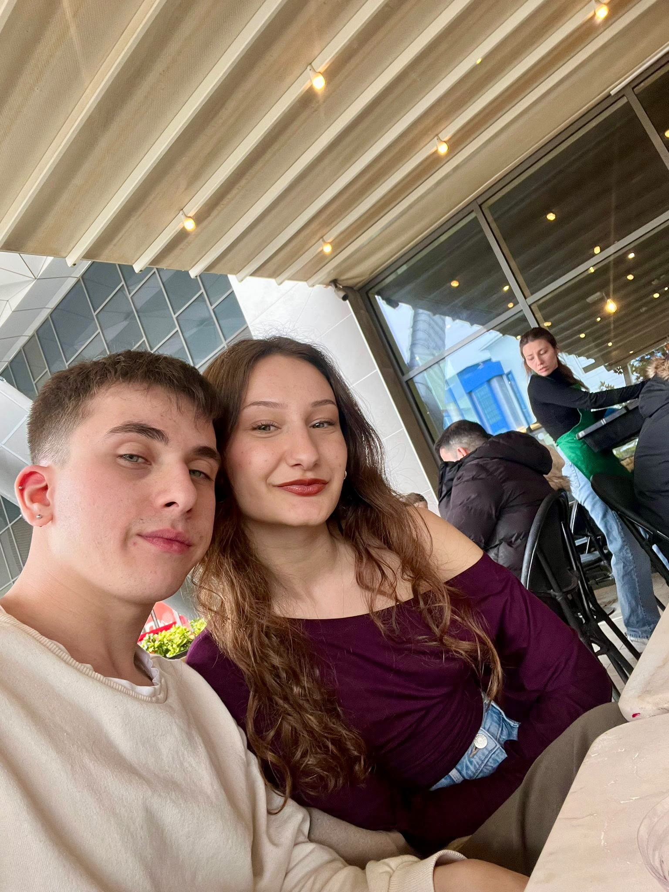
Gelsene dedi bana
Kalsana dedi bana
Gülsene dedi bana
Ölsene dedi banaGeldim
Kaldım
Güldüm
Öldüm
Seni, anlatabilmek seni.
İyi çocuklara, kahramanlara.
Gönlüm deniz kadar sınırsız,
sevgim de onun kadar derin;
sana verdikçe çoğalıyor bende,
çünkü ikisi de sonsuz.
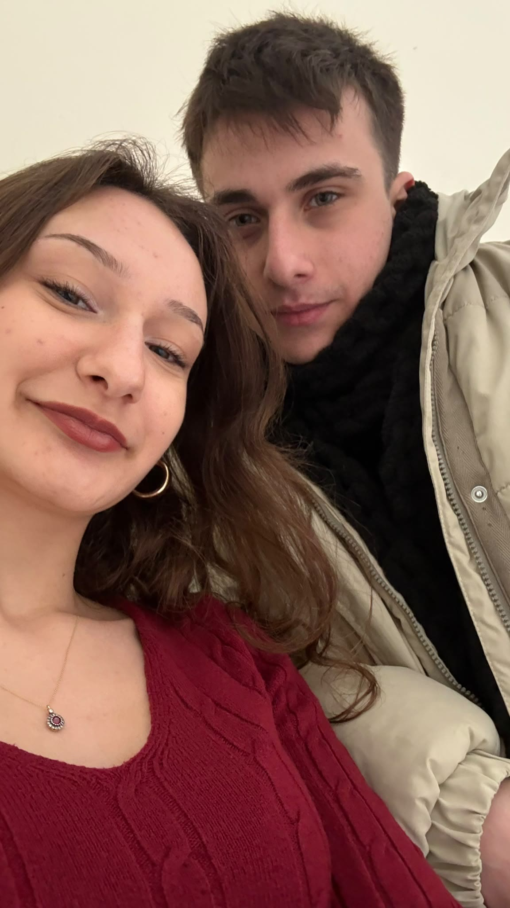
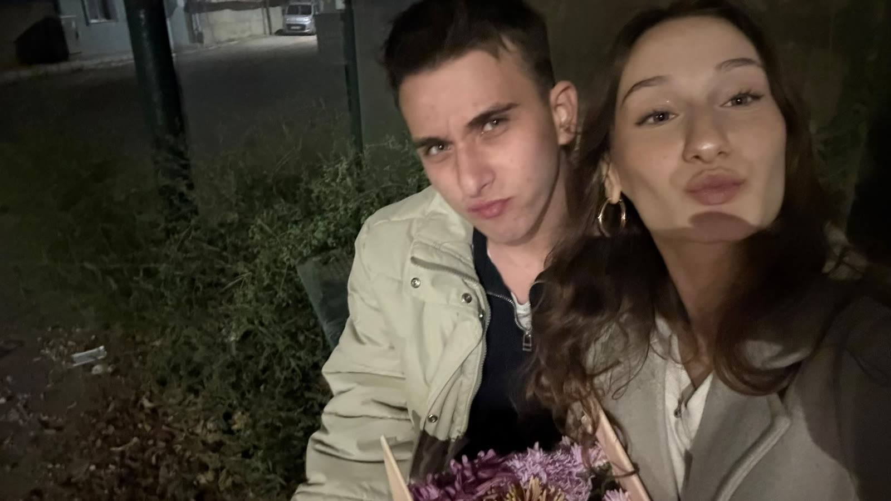
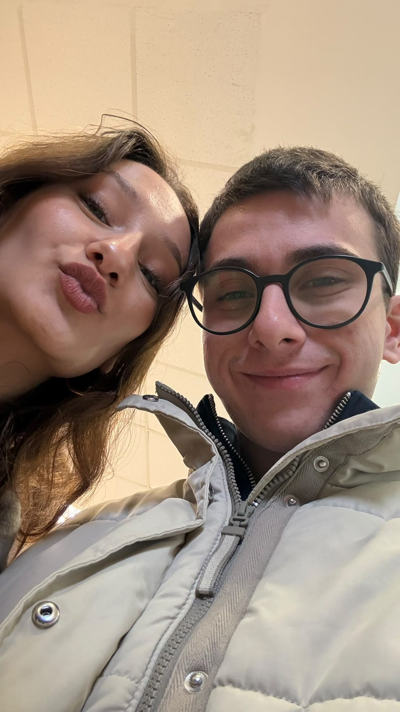
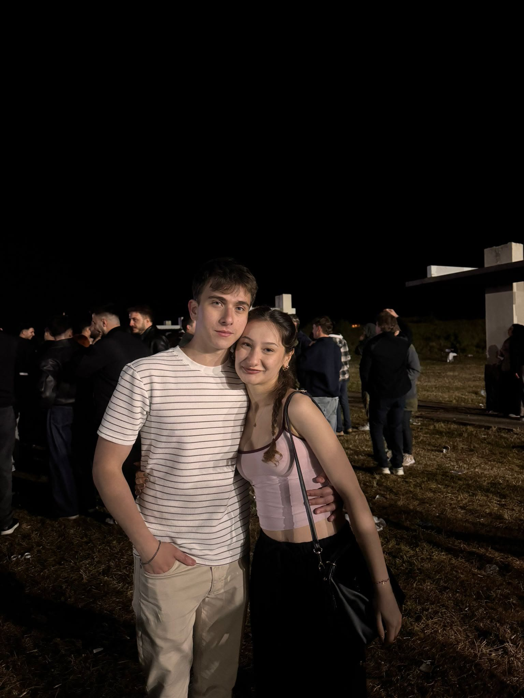
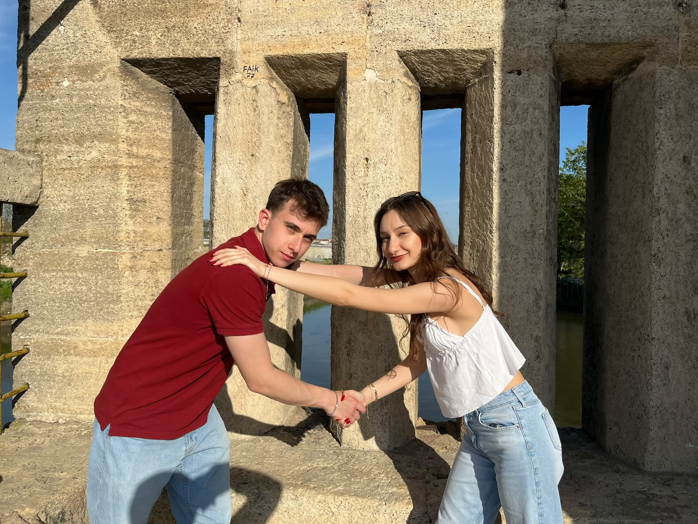
Seviyorum seni
ekmeği tuza banıp yer gibi
geceleyin ateşler içinde uyanarak
ağzımı dayayıp musluğa su içer gibi
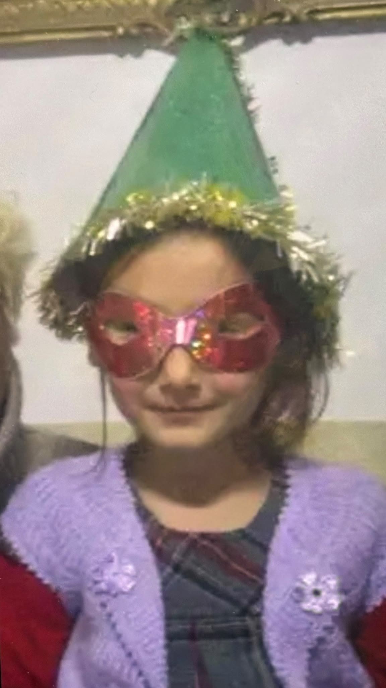